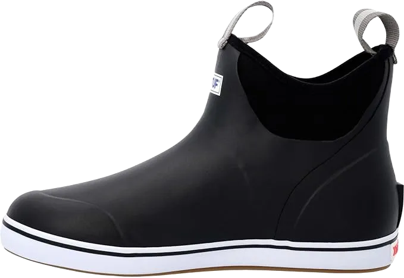
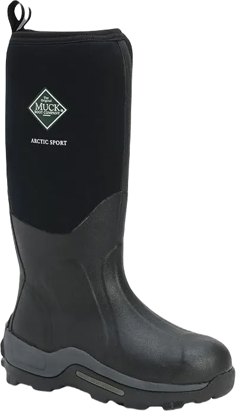

5 Best Rubber Boots for Hiking 2024
When it comes to shoes, there are various types designed to provide exceptional comfort, especially for outdoor activities. The right footwear can offer more protection than other options, making them ideal for hiking. The boots we’re discussing have a great charm and the ability to keep your feet safe from external elements while ensuring comfort and protection.
These boots offer outstanding durability and flexibility, effectively keeping your feet dry and in good condition. Hi-Tec hiking boots are particularly popular among outdoor enthusiasts, as they deliver excellent quality and performance at an affordable price, ensuring a great experience without breaking the bank.
-
#1
Bogs classic high No handle
.webp)
When it comes to hiking, having the right shoes is essential. These shoes are designed to keep out unwanted elements while providing exceptional comfort and protection. Made from high-quality materials, they can handle various terrains with ease. Their excellent grip ensures stability, eliminating any concerns about slipping while on the trail.
Since hiking often involves encountering water, these shoes are specifically designed to offer superior protection against wet conditions. With their water-resistant features, you can trust that your feet will stay dry and comfortable. They are not only practical but also easy to wear, providing better protection than regular footwear.
These shoes are perfect for wearing in snow, rain, or any adverse weather conditions when you need to protect your feet. While they may feel a bit heavy, the comfort and support they provide make them worth it, allowing you to engage in all your desired activities with ease. -
#2
Xtratuf ankle deck boots
These shoes are designed to provide excellent protection while offering a variety of features. They prioritize comfort and quality, boasting impressive durability that makes them suitable for various activities. With an excellent design and high-quality materials, these shoes ensure that your feet remain in great condition.
Not only are these shoes incredibly comfortable, but they also provide warmth in cold temperatures while maintaining breathability for warmer weather. They're perfect for outdoor activities like fishing and hiking, making them versatile for any adventure.
The shock-absorbing insole ensures your comfort, and the price point is very reasonable, making these shoes an affordable choice. They deliver outstanding results and quality without being overly expensive. Designed for durability and flexibility, these shoes are ideal for those who love to explore the outdoors while enjoying excellent value for their money. -
#3
Sperry cold bay chukka
.webp)
These shoes are designed to offer an impressive array of features, providing exceptional comfort and quality to enhance your experience. Suitable for a variety of activities, they are not only practical but also stylish enough for parties, solving all your footwear needs in one go.
With excellent demand and balance, these shoes ensure you look good while also protecting you from extreme heat and cold. Specifically designed for mud runs, they are made from high-quality materials, making them ideal for anyone looking to use them for different purposes.
Their sleek design enhances your hunting experience, featuring a small heel that offers added comfort and ease of wear. Whether you're embarking on an adventure or simply enjoying your free time, these shoes provide the perfect combination of abilities and features to keep you ready for daily life on the trails. -
#4
Kamik hunter
.webp)
These shoes offer exceptional quality and durability, ensuring you receive comfort and reliable performance. They are designed to provide the utmost comfort while protecting you from various elements. Many users appreciate the ease of cleaning and the effortlessness of wearing these shoes, making them a popular choice for those who value functionality.
These shoes feature excellent facilities and attributes, making them highly valuable for activities involving water, mud, or rain. With their waterproof resistance, you can rest assured that you won't encounter any unpleasant surprises while wearing them.
Ideal for both indoor and outdoor activities, these shoes deliver comfort and effectiveness without breaking the bank. Although they may feel slightly heavier, the quality of the materials compensates for this. Perfect for hunting, they come with slip-resistant features that enhance safety, ensuring you can move with confidence without any issues. -
#5
Muck boot arctic sport tall
When it comes to shoes, durability and flexibility are essential qualities that significantly enhance their overall performance. These shoes excel in providing high-quality materials and construction, ensuring a remarkable experience for the wearer. The superior design contributes to their effectiveness, making them a worthwhile investment for anyone seeking reliable footwear.
These shoes are specifically crafted to deliver exceptional comfort, and they stand out for their ability to keep unwanted elements at bay. Easy to slip on, they provide a satisfying fit that you'll want to experience repeatedly. Perfectly suited for those with wide feet, these athletic shoes ensure that you feel good throughout the day, making them a favorite choice for many.
In addition to comfort, these shoes maintain optimal temperatures for your feet, keeping them warm during cold weather. If you're in a warmer climate, their breathability ensures that your feet remain cool and comfortable. With a stylish design that doesn’t compromise on warmth, these shoes boast features that guarantee you’ll enjoy both comfort and style in any setting